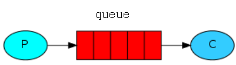
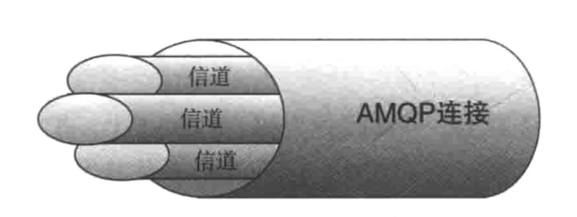
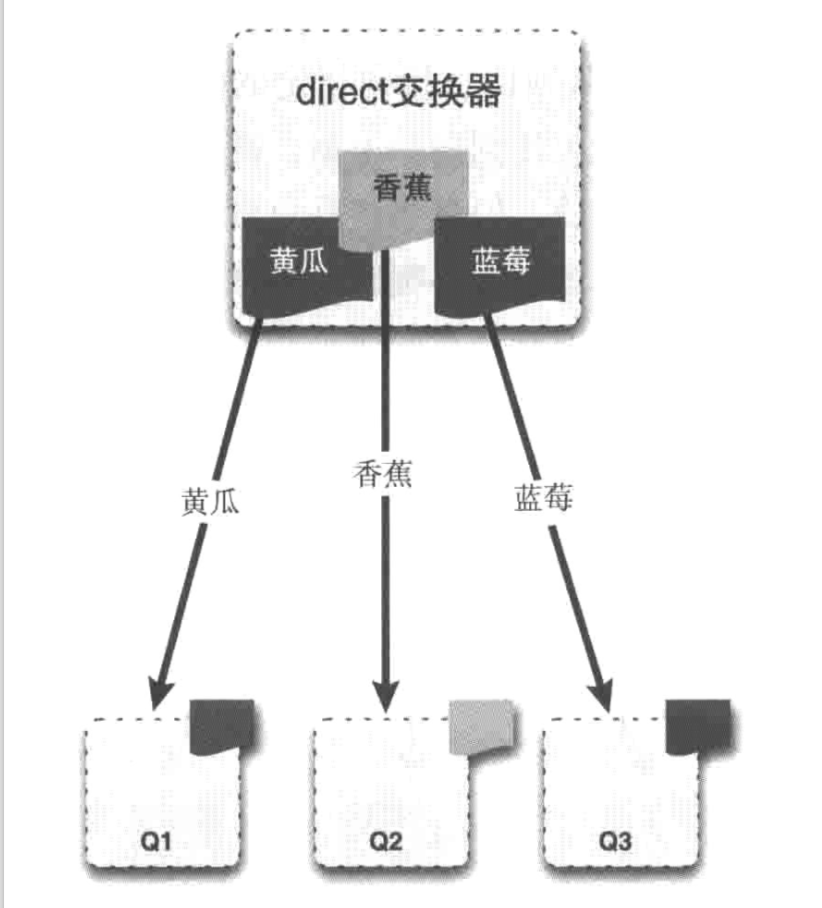
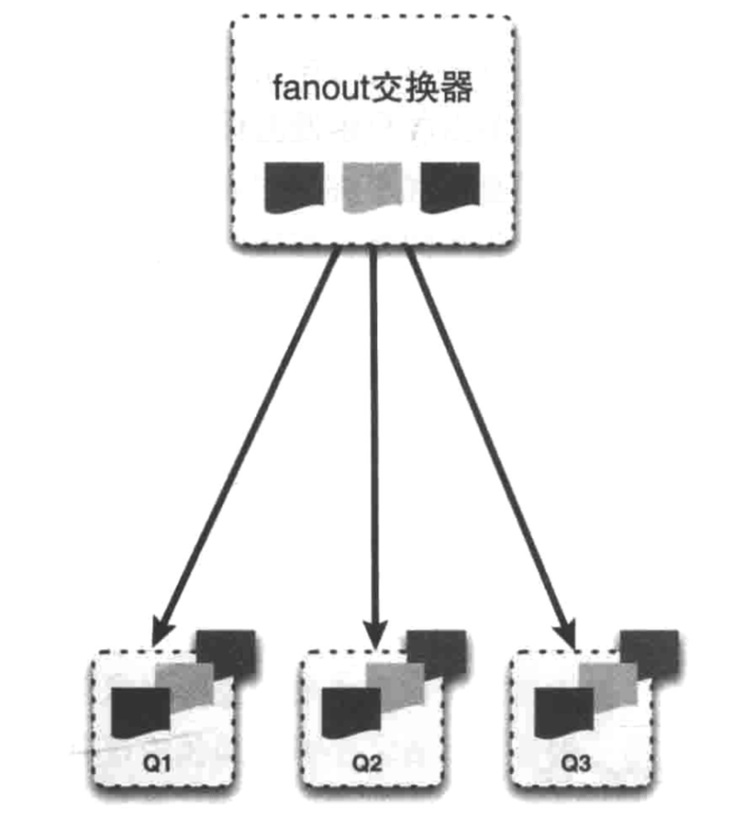
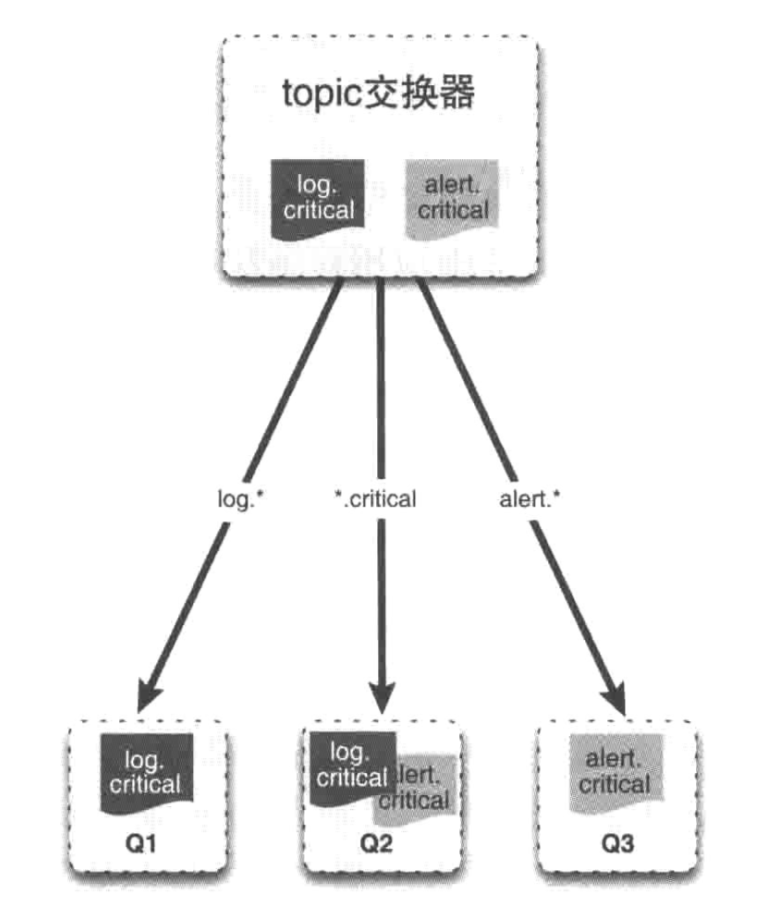
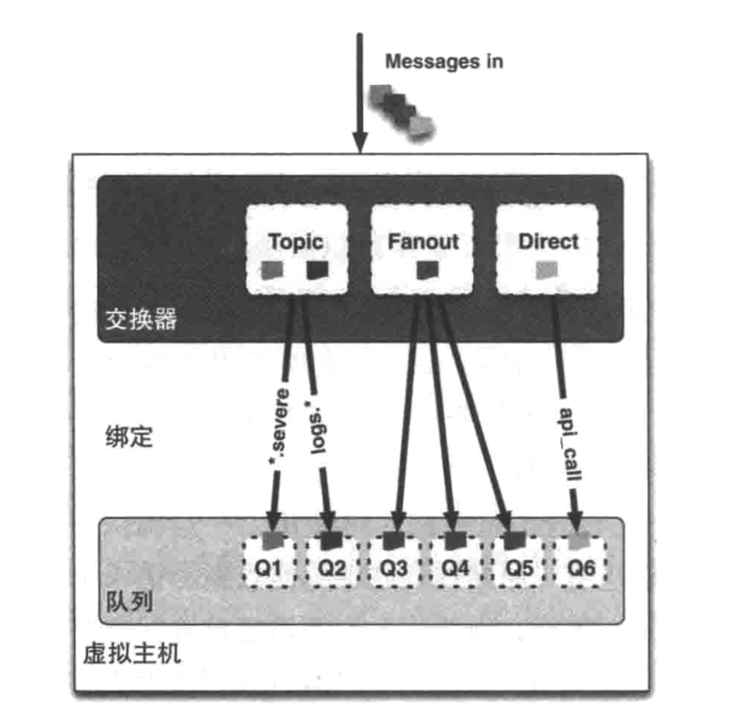
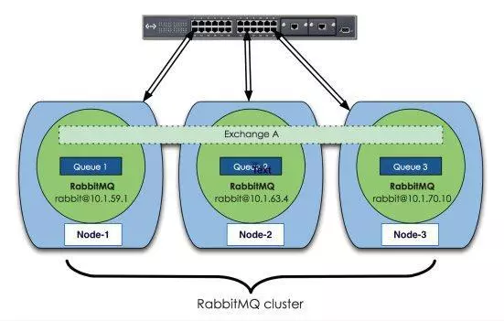

说到消息中间件，大部分人的第一印象可能是Kafka。毕竟Kafka自问世以来，就顶着高并发，大流量的光环。当然了Kafka也不负众望，在大数据处理方面独领风骚。
这里想说说另一款同样优秀的消息中间件RabbitMQ。
选RabbitMQ还是Kafka
如果单机数据量没有到十万级以上，我觉得选哪个都OK，如果超过百万甚至到了千万级别那么建议选择Kafka。
对了还有重要的一点，RabbitMQ支持事务，而Kafka不支持。所以如果你的业务系统要求支持事务，那么只能选RabbitMQ。这也是很多金融系统选择RabbitMQ作为消息中间件的原因。
RabbitMQ基本概念
先来说一下消息中间件的通用模型，所有的消息中间件的模型基本都是这样。

而RabbitMQ是基于AMQP协议实现的。模型大概是这个样子，如下图所示

重点关注中间两个框框，下面依次解读一下。
信道
建立TCP链接是一件很费时的事情，所以很多提供高并发服务的软件都支持TCP链接复用，比如HTTP协议的KeepAlive就是为了复用TCP链接准备的。所以RabbitMQ提出了信道的概念，一个TCP链接里面可以支持多个信道同时通信，以提高通信效率。如下图所示。

broker
一个启动的RabbitMQ实例，代表一个broker。
虚拟主机
虚拟主机可以理解成命名空间的概念，方便队列管理。
交换器
向RabbitMQ发送消息时，先把消息先发到交换器，再由交换器根据相关路由规则发到特定队列上。目前 RabbitMQ的交换器共四种类型：direct、fanout、topic、headers。
headers交换器： 匹配消息的header而不是路由键，除此之外headers交换器和direct交换器完全一致，但性能差很多，所以目前几乎不用。
direct交换器: 消息中的路由键（routing key）如果和Binding（绑定的概念后面会介绍）中的 binding key 一致， 交换器就将消息发到对应的队列中。direct模式是完全匹配的单播模式，也就是说路由键与队列名完全匹配，如果一个队列绑定到交换机要求路由键为“dog”，则只转发 routing key 标记为“dog”的消息，不会转发“dog.puppy”的消息。如下图所示。

fanout交换器：每个发送到fanout交换器中的消息，不会去匹配路由键，而是直接把消息投递到所有绑定到fanout交换器上的队列中。类似一个广播站，会向所有收听广播的用户发送消息。对应到实际应用中，它允许你针对一个消息作不同操作，比如用户上传了一张新的图片，系统要同时对这个事件进行不同的操作，比如删除旧的图片缓存、增加积分奖励等等。这样就大大降低了系统之间的耦合度了。
如下图所示。

topic交换器：topic交换器和direct交换器有相似之处，它通过模式匹配的方式分发消息，将路由键和某个模式进行匹配，此时队列需要绑定到一个模式上。它将路由键和绑定键的字符串切分成单词，这些单词之间用点隔开。它同样也会识别两个通配符：符号#和符号*。#匹配0个或多个单词，*匹配至少一个单词。如下图所示。

绑定
将消息队列和交换器进行关联。一个绑定就是基于路由键将交换器和消息队列连接起来的路由规则，所以可以将交换器理解成一个由绑定构成的路由表，如下图所示：

集群及高可用
因为RabbitMQ是Erlang开发的，所以天生支持分布式。所谓的天生支持的意思就是不用像Kafka那样借助ZK来实现集群。
先来看一下典型的RabbitMQ集群架构图。

集群分为普通模式和镜像模式。另外RabbitMQ集群分为内存节点和磁盘节点，集群当中必须存在磁盘节点。内存节点就是将数据存储到内存中，读写效率会比较高；而磁盘节点是将数据存储到磁盘上面，可以持久化保存数据。
普通模式：默认的集群模式。所谓的普通模式就是，多台机器上启动多个Rabbitmq实例，每台机器启动一个实例。但是创建的queue，只会放在一个Rabbtimq实例上，每个实例都会同步queue的元数据。消费的时候，如果连接到了另外一个实例，那么那个实例会从queue所在实例上拉取数据过来。如果存放queue的节点挂掉，那么就不能提供服务了。所以这种方式并不是真正的高可用。
镜像模式：创建的queue，无论元数据还是消息都会存在于多个实例上，每次写消息到queue的时候，都会自动把消息同步到多个实例的queue里。任何一个节点挂掉后，其他节点可以继续提供服务。类似于Redis集群的哨兵模式。关于Redis的高可用部署方式，可以看我这篇文章。
元数据：
元数据主要包含四类,分别是
队列元数据：队列名称及属性；
交换器元数据：交换器名称、类型及属性
绑定元数据：记录了如何将消息路由到队列的数据；
vhost元数据：为队列、交换器和绑定提供命名空间和安全属性的数据；
运维常用管理命令
启动/sbin/rabbitmq-server
重启/sbin/rabbitmqctl reset
停止
/sbin/rabbitmqctl stop
停止应用/sbin/rabbitmqctl stop_app
查看RabbitMQ状态/sbin/rabbitmqctl status
查看绑定/sbin/rabbitmqctl list_bindings
查看交换器/sbin/rabbitmqctl list_exchanges
查看已声明的队列/sbin/rabbitmqctl list_queues
stop和stop_app 的区别
这里需要特别注意一下这两个命令的区别：由于 RabbitmMQ是用Erlang写的，Erlang有节点的概念，也就是在一个Erlang节点上，可以运行很多个Erlang应用，stop命令是使得整个Erlang节点停止工作，而stop_app则是使得当前应用停止工作，不会影响其它应用的正常运行。
总结
如果之前一直接触的Java开发的中间件，突然接触RabbitMQ，会有些许不适应。特别是对于RabbitMQ的集群部署及高可用的理解。不过了解之后会发现这只兔子还是很可爱的。毕竟存在就有存在的道理。
推荐阅读
1. Java并发编程那些事儿(十)——最后的总结
2. Java8的Stream流真香，没体验过的永远不知道
3. Awk这件上古神兵你会用了吗
4. 手把手教你搭建一套ELK日志搜索运维平台